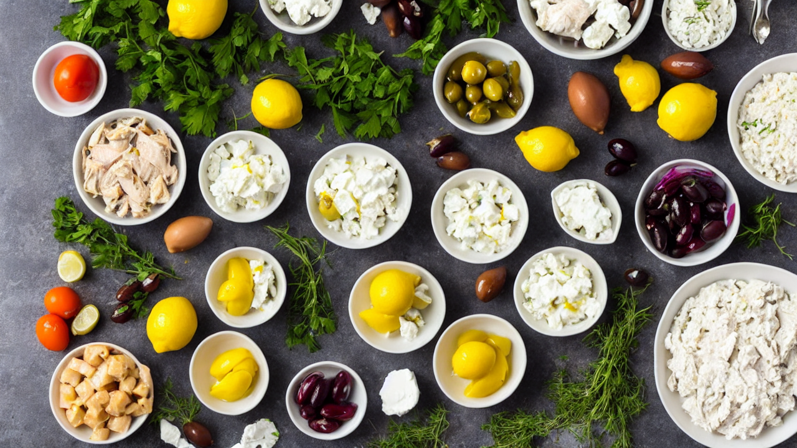
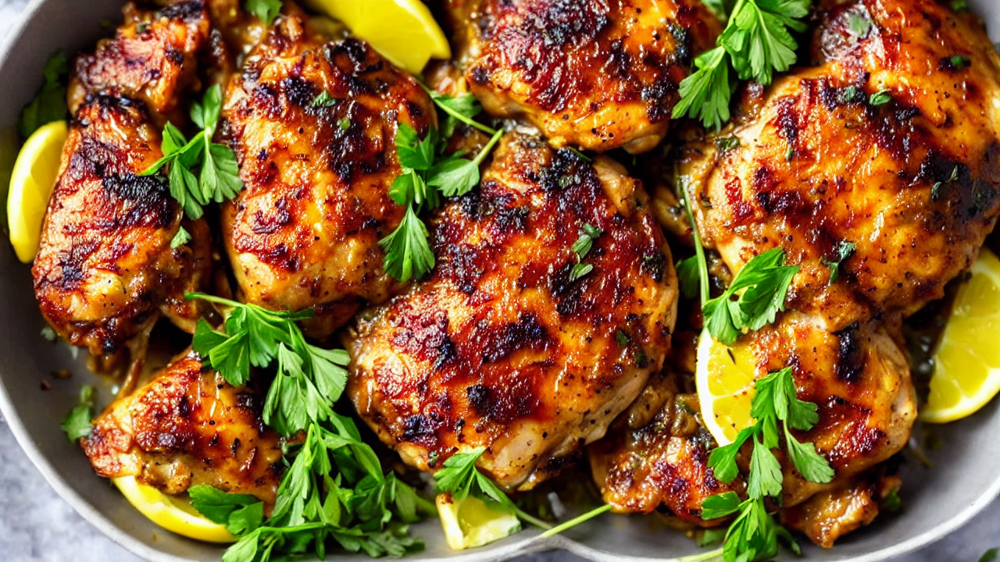
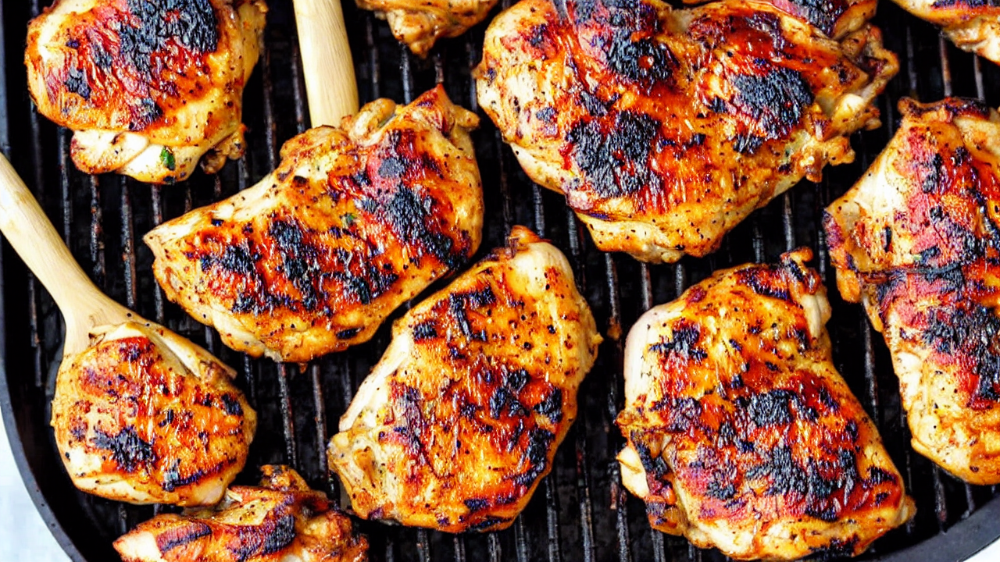
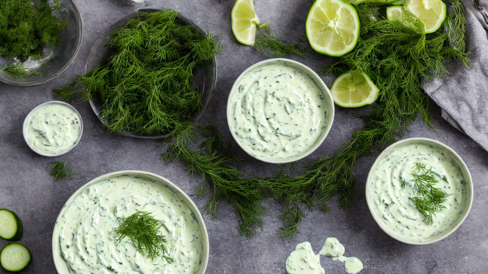
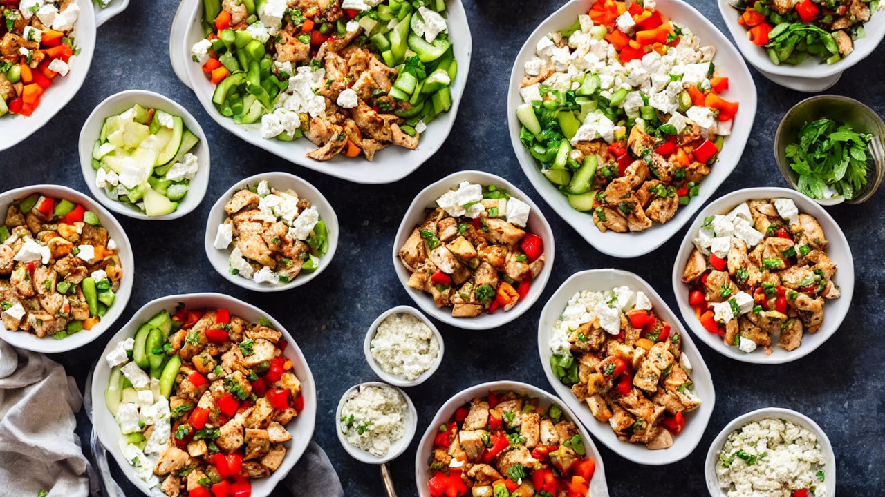
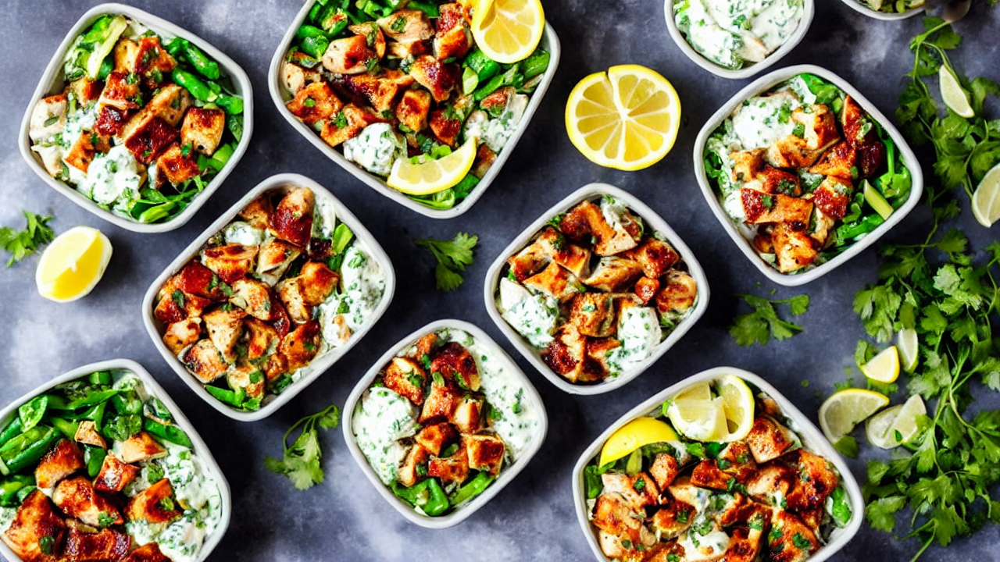

Greek Chicken Bowl | Healthy Mediterranean Meal Prep
This Greek Chicken Bowl is loaded with juicy lemon herb chicken, fluffy rice, cucumber, tomatoes, red onion, kalamata olives, and creamy tzatziki. Perfect for meal prep and packed with Mediterranean flavors!
Ingredients
- chicken thighs
- lemon juice
- olive oil
- garlic
- oregano
- rice
- cucumber
- cherry tomatoes
- red onion
- kalamata olives
- feta cheese
- for the tzatziki: Greek yogurt
- cucumber
- garlic
- dill
- lemon
Instructions

This Greek Chicken Bowl has everything: juicy marinated chicken, fluffy rice, crisp veggies, tangy feta, and creamy homemade tzatziki. Healthy, filling, and perfect for meal prep.

You'll need: chicken thighs, lemon juice, olive oil, garlic, oregano, rice, cucumber, cherry tomatoes, red onion, kalamata olives, feta cheese, and for the tzatziki: Greek yogurt, cucumber, garlic, dill, and lemon.

Marinate the chicken in lemon juice, olive oil, minced garlic, oregano, salt, and pepper for at least 30 minutes. The longer it marinates, the more flavorful and tender it becomes.

Grill or pan-sear the chicken over medium-high heat for 6 minutes per side until charred and cooked through. Let it rest for 5 minutes, then slice into strips.

Make the tzatziki by mixing Greek yogurt with grated cucumber, minced garlic, fresh dill, lemon juice, and a drizzle of olive oil. Season with salt. This sauce makes everything better.

Assemble the bowls: start with fluffy rice, add sliced chicken, diced cucumber, halved cherry tomatoes, thinly sliced red onion, kalamata olives, and crumbled feta cheese.

Drizzle generously with tzatziki and a squeeze of lemon. This Greek Chicken Bowl is meal prep gold — make four at once for the whole week. Healthy eating has never tasted this good.